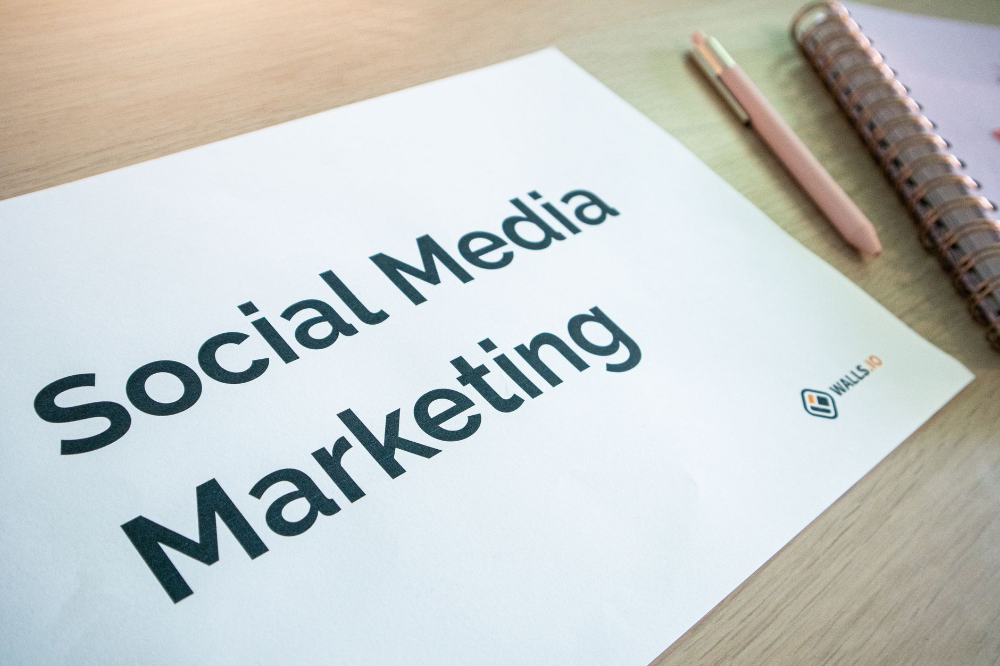

Stop guessing about your marketing. You’re likely spending time and money trying to decide whether email marketing or social media will bring in more local customers. The truth is, neither one works in a vacuum. Your Google Business Profile is the foundation of your local visibility. If that’s not dialed in, everything else is just noise. We build websites and SEO strategies specifically for small, local businesses like yours - plumbing companies, salons, dental offices, and more. We’ve seen firsthand what actually works to generate phone calls and appointments. Let’s cut through the confusion and get you results. If you’re tired of throwing money at marketing campaigns that don’t deliver, let’s talk about a smarter approach. Contact us for a free consultation.

Stop Choosing Email vs. Social Media for Local Leads
You’re probably scrolling through countless articles debating the merits of email versus social media. You’re told one is “better” and the other is “worse.” That’s a false dilemma. Both can be valuable tools, but they serve different purposes. The key isn’t which you choose, but how you use them together, and understanding their strengths. The biggest mistake small business owners make is trying to do everything at once. It’s overwhelming and ineffective. You need a focused strategy, not a chaotic mix of tactics. Your Google Business Profile is the critical starting point. It’s the first thing potential customers see when they search for your type of business in your area. Without a fully optimized profile, you’re essentially invisible to local searches.
Email Isn’t for Finding New Clients - It’s for Keeping Existing Ones Happy
Email marketing isn’t about chasing down new leads. It’s about nurturing the relationships you already have. Think of it as the glue that holds your customer base together. Use email to send valuable updates, exclusive offers, appointment reminders, and helpful tips related to your industry. For example, a local bakery could send out an email announcing a new seasonal pie flavor. Or a landscaping company could share a guide on preparing your lawn for winter. These emails build trust and demonstrate that you care about your customers’ needs. Don’t use email to aggressively try to sell something to someone who hasn’t even heard of you. That’s a recipe for being ignored. It’s about providing value first, and sales second. This builds loyalty and encourages repeat business. Email consistently drives more direct transactions than social media for small businesses.

Social Media Is for Showing Up Where People Are Looking - Right Now
Social media’s primary role is visibility. It’s about getting your business noticed when someone is actively searching for a solution in your area. Don't just post pretty pictures of your products or services. Post content that answers a real local question or addresses a common problem. Think about what your neighbors are Googling. A local mechanic might post a short video demonstrating how to check your car’s tire pressure. A hair salon could share a tutorial on a trending hairstyle. Every post needs a clear call to action. Tell people exactly what you want them to do: “Call us for a free estimate,” “Book your appointment online,” or “Visit our website to learn more.” Don’t just hope people will figure it out on their own. Be direct and make it easy for them to take the next step. People who follow your business on social media are meaningfully more likely to buy from you later.
Where to Get Found: The Non-Negotiable Foundation - Your Google Business Profile
Let’s be clear: your Google Business Profile (GBP) is not optional. It’s the absolute foundation of your local online presence. It’s the map listing that appears when someone searches for your business type in your town. If your GBP is incomplete, inaccurate, or poorly optimized, you’re severely limiting your potential reach. It’s like having a storefront with no sign or address. Make sure your profile includes:
- Accurate Business Name and Address: Double-check everything.
- Phone Number: Ensure it’s clickable and accurate.
- Website URL: Direct people to your website.
- Business Hours: Keep them updated, especially during holidays.
- Categories: Select the most relevant categories for your business.
- Photos: High-quality photos of your business, products, and team.
- Services/Products: List all the services or products you offer.
- Attributes: Add relevant attributes like “Wheelchair Accessible” or “Free Wi-Fi.”
Optimizing your GBP is a continuous process. Regularly update your profile with new information, respond to reviews, and post updates. A well-maintained GBP dramatically increases your chances of appearing in Google Maps and the local pack - the three-pack of local businesses that shows up in search results. Without this foundation, your efforts on social media and email will be significantly less effective.
Email Marketing Building Trust with Existing Clients - The Repeat Business Engine
Email marketing is the engine that drives repeat business. It’s not about blasting out promotional emails to a mass list. It’s about building relationships and providing value to your existing customers. Send personalized emails based on their past purchases or interests. For example, a pet supply store could send an email with tips on caring for a new puppy. A restaurant could offer a discount to customers who haven't visited in a while. These emails show that you care about their needs and are invested in their success. Remember, email is about nurturing the relationships you’ve already built.
Social Media Showing Your Local Expertise - Become a Neighborhood Authority
Social media isn’t a magic bullet for attracting new customers. It’s a platform for showcasing your expertise and building a connection with your local community. Don’t just post promotional content. Share valuable insights, tips, and advice related to your industry. A plumbing company could post a quick video demonstrating how to fix a leaky faucet. A dentist could share a graphic about the importance of flossing. Become a trusted resource in your community. When people have a problem, they’re more likely to turn to a business they see as an authority. Focus on answering questions and solving problems, not just selling products or services. Consider running polls or asking questions to engage your audience. Most consumers trust recommendations from friends and family more than any form of advertising.
The Real Play: Connecting Your Channels for Local Growth
It’s tempting to focus solely on one marketing channel, but the most effective strategy involves integrating your email marketing and social media efforts. Use social media to drive traffic to your email list and vice versa. Promote your email newsletter on your social media channels. Include a link to your email signup form on your website and GBP. Similarly, include links to your social media profiles in your email newsletters. This creates a synergistic effect, amplifying your reach and increasing your chances of success. Don’t treat email and social media as separate entities. They’re part of a larger, integrated marketing strategy.
Stop Counting Likes. Start Counting Phone Calls.
Let’s be honest: likes and followers don’t pay the bills. While social media can increase brand awareness, the ultimate goal is to generate leads and drive sales. Stop obsessing over vanity metrics like likes and followers. Instead, focus on tracking the metrics that matter: phone calls, website visits, and appointment bookings. Implement a system for tracking where your leads are coming from. Use Google Analytics to monitor website traffic. Use call tracking software to track phone calls generated from your online marketing efforts. This data will help you identify what’s working and what’s not. Email leads tend to be more qualified than social leads because someone handed you their address on purpose.
Let’s Build Your Local Success - Schedule a Free Consultation
You’ve probably spent countless hours researching marketing strategies and feeling overwhelmed by the options. You’re looking for a simple, effective way to get more customers through your doors. At Fused Distribution, we specialize in helping small local businesses like yours thrive online. We build beautiful, responsive websites and create targeted SEO strategies that get you found in Google Maps and local search results. We don’t believe in complicated marketing jargon or expensive, ineffective campaigns. We focus on delivering results that you can see and measure. Ready to stop guessing and start getting leads? Contact us today for a free consultation. Let’s discuss your business goals and create a marketing plan that’s tailored to your specific needs. We’ll help you build a strong online presence and generate more phone calls, appointments, and sales. Your local success starts here.
Related
- Welcome Email Sequence For New Customers
- Automated Email Sequences for Local Business: Stop Losing Customers Before They Find You
- Email Open Rate What Is Good For Small Business
Read next: Welcome Email Sequence For New Customers